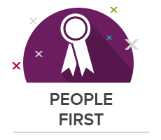
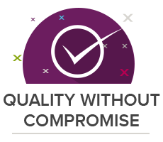
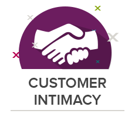

Chaque consultant participe à la mission de Xebia
- 
- 
- 
La formule de Xebia
Nous croyons que ce sont les Xebians qui créent Xebia. Ces derniers font la différence. Ils sont passionnés et expérimentés. Ils ont fait le choix d'une carrière technique et incarnent au quotidien les valeurs de Xebia. Xebia offre un environnement propice aux personnes souhaitant développer leur potentiel.Un processus de recrutement exigent, des évaluations régulières, le partage de connaissance obligatoire et un focus sur la productivité, la qualité et les résultats sont les instruments de la réussite pour Xebia et sont reconnus comme une force par nos clients.
Ce que nous faisons
- Agilité
- Big Data
- Back-end
- Front-end
- DevOps
- Cloud
- Mobilité
Nous rejoindre
Cessez de faire carrière, commencer à contribuer
Si vous êtes intelligent, passionné par le monde toujours mouvant du logiciel et si vous voulez rejoindre une aventure géniale, rejoignez-nous ! N'hésitez pas à postuler même si aucun poste ne vous attire, nous adorons les bonnes surprises.
Postuler